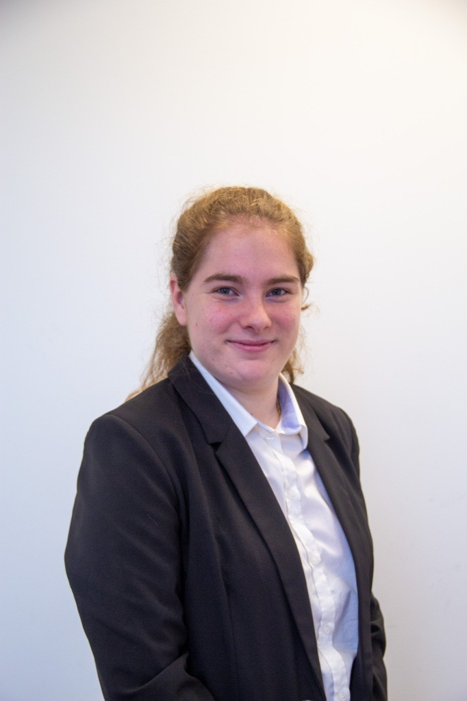

Une réponse simple à un vrai besoin
L’expiration d’un certificat SSL est une information importante, mais elle reste souvent peu visible ou trop technique à lire. SEAL vise à rendre cette lecture plus naturelle et immédiate.
SEAL a été pensé comme une interface claire et accessible pour visualiser simplement l’expiration des certificats SSL, tout en offrant une expérience moderne, lisible et rassurante.
Rendre compréhensible une information technique importante, sans surcharger l’utilisateur ni complexifier l’expérience.
Une interface soignée, une lecture directe, un design cohérent, et une attention particulière à l’accessibilité et au confort visuel.
Pourquoi SEAL existe et ce qu’il cherche à apporter.
L’expiration d’un certificat SSL est une information importante, mais elle reste souvent peu visible ou trop technique à lire. SEAL vise à rendre cette lecture plus naturelle et immédiate.
Le site public a été conçu pour permettre une consultation rapide, lisible et agréable, avec une expérience qui reste cohérente sur ordinateur comme sur mobile.
Les principes qui guident la conception du site.
Présenter l’essentiel avec des formulations simples, une hiérarchie visuelle nette et une lecture accessible.
Permettre à différents profils d’utilisateurs de comprendre le résultat, même sans expertise technique avancée.
Maintenir une identité visuelle homogène sur toutes les pages, avec le même niveau de qualité, de lisibilité et de fluidité.
Quelques idées-clés qui structurent le projet SEAL.
SEAL a été pensé pour rendre une donnée technique immédiatement lisible grâce à une présentation visuelle plus intuitive.
Le site privilégie une interface élégante, structurée et rassurante, afin de rendre l’usage plus agréable au quotidien.
SEAL a été pensé comme une plateforme pouvant répondre à des besoins similaires dans d’autres organisations et pour d’autres utilisateurs.
Les personnes qui portent le projet SEAL.
Coordonne l’équipe, définit l’architecture du projet et assure le bon déroulement des étapes.

Se concentre sur l’expérience utilisateur et un design moderne, clair et intuitif.
Développement, documentation et valorisation des résultats du projet.
Mise en place des tests, vérification des performances et garantie de fiabilité.
Vous pouvez maintenant explorer les fonctionnalités, consulter la FAQ, ou revenir à l’accueil pour tester directement un domaine.